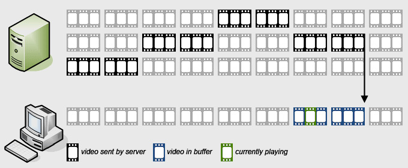

This guide provides an overview on playing Apple HLS streams in Flash with JW Player. This advanced functionality is available in the Premium and Ads editions of JW6.
Apple's HTTP Live Streaming (HLS) is a protocol for streaming video using an ordinary web server. It supports live and on-demand streaming, as well as the ability to automatically adapt the stream quality to device and network conditions. The protocol works as follows:
If multiple qualities of a stream are available, the player will continuously monitor the current bandwidth and pick the next fragment from the highest quality it can load. This is called Adaptive Streaming:

Various protocols for HTTP adaptive streaming are in the market today. JW Player supports HTTP Live Streaming, because it's currently the only protocol capable of streaming to desktop computers as well as to Apple's iPad and iPhone devices.
Every edition of JW Player supports HLS for iPad/iPhone in HTML5 mode. Additionally, the Premium and Ads editions support HLS for desktop browsers in Flash mode. JW Player does not support HLS for Android devices.
On the iPhone and iPad, HLS support is built into the iOS system. Therefore, see Apple's HTTP Live Streaming Overview for details on supported features.
On desktops in Flash mode, JW Player supports:
Fragments that do not meet these requirements will introduce rendering errors in JW Player, ranging from short stutters and macroblock artefacts to an eventual stall of the stream.
In practice, JW6 is compatible with HLS streams generated by the Wowza Media Server and Adobe Media Server, as well as the mediafilesegmenter and mediastreamsegmenter tools Apple provides. Many additional encoding and segmenting tools may provide compatible streams, but this is not guaranteed.
Since HLS streams are transported over standard HTTP, any CDN can be used for their delivery.
Note that, when playing in Flash, both the M3U8 manifests and the TS segments are subject to crossdomain security restrictions. See Crossdomain File Loading for more info and a workaround.
Embedding an HLS stream using JW Player is a matter of providing the location to the stream's M3U8 manifest file. All info can be found in the embedding guide, but here's a basic setup:
jwplayer("myElement").setup({
file: "/assets/myStream.m3u8",
image: "/assets/myPoster.jpg"
});
Since HLS is not supported on Android, this setup will result in an Unsupported Format setup error on these devices. For live streams, this cannot be avoided. For on-demand streams, Android support can be added by offering an additional MP4 file of the video:
jwplayer("myElement").setup({
playlist: [{
image: "/assets/myPoster.jpg",
sources: [{
file: "/assets/myStream.m3u8"
},{
file: "/assets/myVideo.mp4"
}]
}],
primary: "flash"
});
Next to a playlist block, this setup includes the primary option, set to flash. If this is not set, JW Player will attempt to play the video in HTML5. Because one of the sources is MP4, this will succeed for Chrome, IE9 and Safari.
If the M3U8 manifest provided contains so-called variant playlists, JW Player will automatically start playing the highest quality stream that fits the bandwidth and the screen size. JW Player will automatically adjust the stream if the bandwidth increases or decreases during playback.
At the same time, users are able to select their quality of choice through a Quality menu in the controlbar. In addition to the preselected Auto option, all variant streams are available. If a user chooses a distinct stream, the automated quality switching is disabled:
The labels for these options are automatically generated from the M3U8 file. If the file has RESOLUTION options set, the height (+ "p") is displayed. If only BANDWIDTH options are provided, the bitrate (+ "kbps") is displayed. Here is an M3U8 manifest that provides both:
#EXTM3U #EXT-X-STREAM-INF:PROGRAM-ID=1,BANDWIDTH=1600000,RESOLUTION=1280x720 1280/prog_index.m3u8 #EXT-X-STREAM-INF:PROGRAM-ID=1,BANDWIDTH=832000,RESOLUTION=640x360 640/prog_index.m3u8 #EXT-X-STREAM-INF:PROGRAM-ID=1,BANDWIDTH=320000,RESOLUTION=320x180 320/prog_index.m3u8
Note that JW Player also uses RESOLUTION to determine the aspect ratio of a stream. If it is not set, JW Player presumes a default aspect ratio of 16:9.